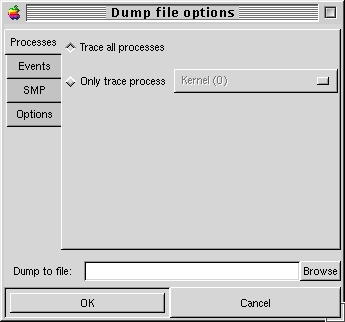
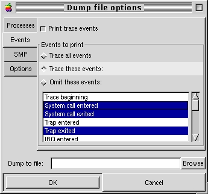
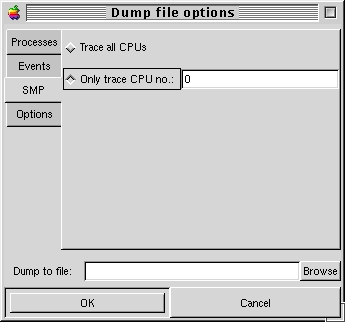
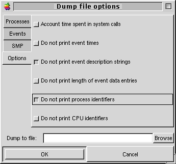

6.3 Dump To File window
Selecting the "Dump to File" Command from the File
menu displays the following:

Figure 1: Dump to file window, Process-related options
displayed
This is used to write a report to disk, including
analysis of the data. Various options can be selected to customize the
generated report.
Specify the file to dump to in the "Dump to file"
entry field. The Browse button will display the GTK+ file selection window.
Any file-related errors will be reported in the main window's status bar.
6.3.1 Process options
Clicking on the Processes tab, as in figure 1, will
display the process-related options. These are:
-
Trace all processes: Include all processes present during data acquisition
in the analysis generated.
-
Only trace process: Perform analysis on only one process, specified
via the option menu.
6.3.2 Event options
Selecting the Events tab will display the following
choices:

Figure 2: Dump to file window, Event-related options
selected
-
Print trace events: If this check box is selected, the raw list
of events will be written to the dumped file. The events included in the
dumped file are:
-
Trace all events: If this option is selected, all possible events
will be written to the report
-
Trace these events: Select this radio button if you want to specify
which types of events should be included in the list of raw events written
to disk. All events whose type is not selected in the list will be ignored.
-
Omit these events: Select this radio button if you want to select
which types of events should NOT be included in the list of raw events
written to disk. All events whose type is not selected in the list will
be included in the report written to disk.
6.3.3 SMP options
LTT supports tracing of events that occurred on multiple
processors. File dumping options related to this feature can be selected
under the SMP tab:

Figure 3: Dump to file window, SMP-related options
selected
Your choices are:
-
Trace all CPUs: Include all CPUs accounted for in the analysis generated.
-
Only trace CPU no.: Perform analysis on only one CPU, as specified
in the text entry.
6.3.4 Other options
A number of other options are available through the
Options tab as shown on Figure 4:

Figure 4: Dump to file window, other options selected
Each of these check boxes allows to:
-
Account time spent in system calls: If selected, the dumped file
will include total time spent in system calls for each process
-
Do not print event times: When selected, the report written to disk
will not include the times at which the events occurred
-
Do not print event description strings: Strings describing the events
will not be included if there is a check in this check box.
-
Do not print length of data entries: Length of the data entry for
each event will not be dumped to the file when this option is selected.
-
Do not print process identifiers: If selected, process identifiers
(PIDs) will not be written to the report generated.
-
Do not print CPU identifiers: Checking this box will prevent
the printing of CPU identifiers (CPU IDs) in the report.